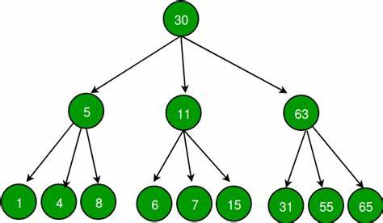
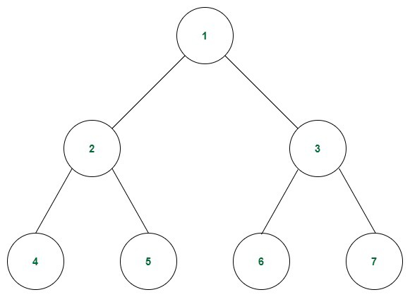
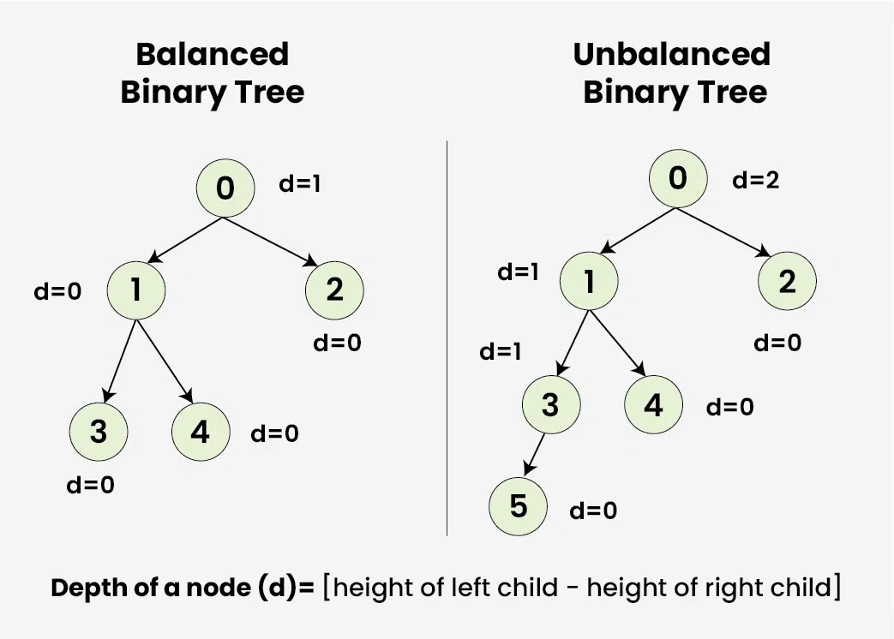
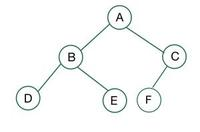
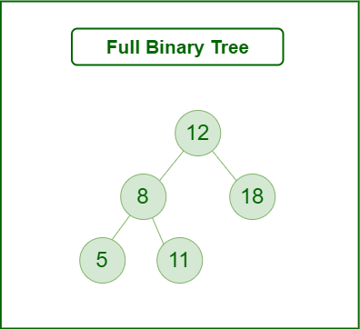
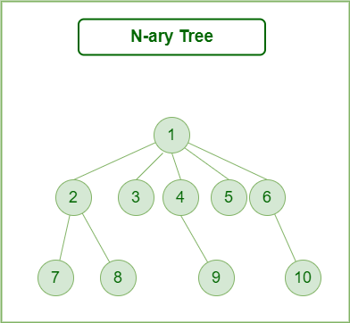
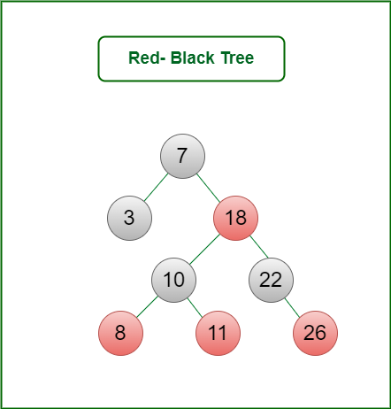

Introduction
A Tree is a non-linear data structure and a hierarchy consisting of a collection of nodes such that each node of the tree stores a value and a list of references to other nodes (the “children”).

Types of Trees in Data Structure based on the number of children:

1. Binary Tree
A binary tree is a data structure in which each node has at most two children referred to as the left child and the right child.
- Each node has at most two children.
- The tree is typically organized into levels or layers.
- Binary trees are used for searching, sorting, and hierarchical data storage.
- Common operations include insertion, deletion, and traversal (preorder, inorder, postorder).
Example:
Consider the tree below. Each node has only 2 children, making it a Binary Tree.

2. Ternary Tree
A ternary tree is a data structure in which each node can have at most three children, usually referred to as left, middle, and right children.
- Each node has at most three children.
- Commonly used in specialized search algorithms, such as ternary search trees for string processing.
- Provides more flexibility than binary trees in certain applications.
Example:
Consider the tree below. Each node has up to 3 children, making it a Ternary Tree.
3. Perfect Tree
A perfect binary tree is a binary tree in which all interior nodes have two children and all leaves are at the same level.
- All leaf nodes are at the same depth.
- Every non-leaf node has exactly two children.
- Completely filled at every level.
- Perfect trees are highly balanced, ensuring optimal performance for traversal and searching operations.
Example:
4. Balanced Tree
A balanced binary tree maintains its height at O(log n) to ensure optimal performance for various operations like search, insert, and delete.
- Height is kept as low as possible (O(log n)).
- Ensures efficient searching, inserting, and deleting operations.
- Examples include AVL trees and Red-Black trees.
- Used extensively in databases and file systems for efficient indexing.
Example:
5. Complete Tree
A complete binary tree is a binary tree where all levels except possibly the last are completely filled, and the last level is filled from left to right.
- All levels except the last are fully filled.
- Nodes at the last level are filled from the leftmost side.
- Used in heap data structures to maintain efficient priority queue operations.
- Guarantees O(log n) height for optimal performance.
Example:
6. Full Tree
A full binary tree is a binary tree in which every node other than the leaves has two children.
- Every node has either 0 or 2 children.
- All leaf nodes are at the same level.
- Efficient for traversal and storage in hierarchical structures like decision trees.
Example:
7. N-ary Tree
An N-ary tree is a tree data structure where each node can have at most N children.
- Each node can have up to N children.
- Generalizes binary trees by allowing more than two children per node.
- Commonly used in file systems, decision trees, and other hierarchical data storage.
Example:
8. AVL Tree
An AVL tree is a self-balancing binary search tree in which the heights of the two child subtrees of any node differ by at most one.
- Self-balancing binary search tree.
- Height difference between subtrees is at most one.
- Ensures O(log n) time complexity for search, insertion, and deletion operations.
- Commonly used in database indexing and memory management.
Example:

9. Red-Black Tree
A red-black tree is a balanced binary search tree with an additional property that maintains balance during insertions and deletions.
- Each node is either red or black.
- The tree is balanced using a set of balancing rules involving the color of nodes.
- Efficient for searching, insertion, and deletion with O(log n) time complexity.
- Used in map and set implementations in programming languages like Java and C++.
Example:
Conclusion
Understanding different types of trees is essential for efficient data management and retrieval in computer science. Each type of tree has its unique advantages and use cases.
- Binary trees are widely used for hierarchical data storage and searching.
- Self-balancing trees like AVL and Red-Black trees ensure efficient operations even after multiple insertions and deletions.
- N-ary trees generalize binary trees, providing flexibility in applications like file systems and decision-making structures.